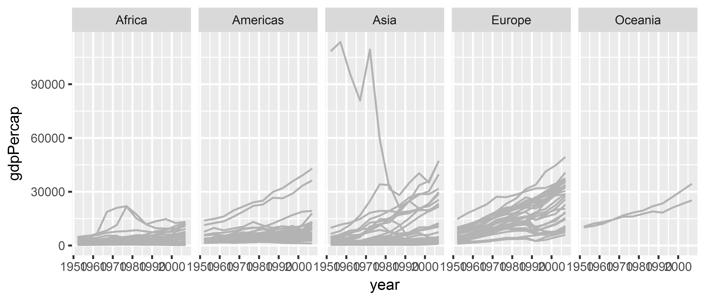

Session 3: Facets and small multiples
facets
faceted plots (or small multiple plots) are a way to divide your data up by a categorical variable. Facets are “not a geom, but rather a way of organizing a series of geoms” (Kieran Healy).
facets: think about the comparison!
GDP/pc development by continent.
In ggplot, we use the facet_wrap() building block to specify the faceting variable(s).
p <- ggplot(data = gapminder,
mapping = aes(x = year,
y = gdpPercap)) +
geom_line(color="gray70",
aes(group = country)) + # recall we need to map group to country
facet_wrap(~ continent, # "~"
ncol = 5) # how many columns?facets: think about the comparison!
print(p)
facets: all elements
library(tidyverse)
library(gapminder)
p <- ggplot(data = gapminder,
mapping = aes(x = year,
y = gdpPercap)) +
geom_line(color="gray70", aes(group = country)) +
# add smoother
geom_smooth(size = 1.1, method = "loess", se = FALSE) +
# log y axis (could've also wrapped y=log(gdpPercap) in aes() above)
scale_y_log10(labels=scales::dollar) +
# facet command
facet_wrap(~ continent, ncol = 5) +
# labels and appearance tweaks
labs(x = "Year",
y = "GDP per capita",
title = "GDP per capita on Five Continents") +
theme_bw() +
theme(axis.text.x = element_text(size = 5))facets: all elements
print(p)
facets: more applications
Recall our example: relationship between GDP per capita and population in Asia.
gdp_pop_plot <- ggplot(gapminder %>% filter(continent == "Asia"),
aes(x = log(pop),
y = log(gdpPercap))) +
geom_point(alpha = 0.5, size = 2) +
geom_smooth(method = "lm")
print(gdp_pop_plot)class: inverse, center, middle
Really a negative relationship?
facets: more applications
Plot regression line by country (without facets)
gdp_pop_plot <- ggplot(gapminder %>% filter(continent == "Asia"),
aes(x = log(pop),
y = log(gdpPercap))) +
geom_point(aes(color = country),
alpha = 0.5, size = 2) +
geom_smooth(aes(fill = country, color = country),
method = "lm") +
theme(legend.position = "none")facets: more applications
facets: more applications
Prior plot useful for MoMA, but not for the data analyst. How to do better?
facets!
gapminder_asia <- gapminder %>%
filter(continent == "Asia")
gdp_pop_plot <- ggplot(gapminder_asia,
aes(x = log(pop),
y = log(gdpPercap))) +
geom_point(alpha = 0.5, size = 1) +
geom_smooth(method = "lm", size = 0.7) +
facet_wrap(~ country, scales = "free") + # scales = "free" to vary axis limits +
theme_bw() +
theme(axis.text = element_text(size = 4),
strip.text = element_text(size = 6)) facets: more applications
class: inverse background-image: url(“Ninja-header.svg_opacity1.png”) background-size: contain
Useful tips from the dataviz ninja
Think hard about what you want to visualize!
Don’t use too many aesthetics - just use those that help you clarify your comparison!
Trial and error is your friend!
Alphabet is the least useful ways to organize information.
facets: order by summary statistic
library(forcats) # useful to reorder factors or ordered categorical variables
gapminder_asia <- gapminder %>%
filter(continent == "Asia") %>%
# do all data manipulation by country
group_by(country) %>%
# extract beta coefficient from reg of GDP on pop
mutate(beta = coef(lm(log(gdpPercap) ~ log(pop)))[2]) %>%
# remove country grouping
ungroup() %>%
# sort "country" variable by beta
mutate(country_order = fct_reorder(country, beta))
head(gapminder_asia, 5)## # A tibble: 5 x 8
## country continent year lifeExp pop gdpPercap beta country_~
## <fctr> <fctr> <int> <dbl> <int> <dbl> <dbl> <fctr>
## 1 Afghanistan Asia 1952 28.8 8425333 779 -0.0380 Afghanis~
## 2 Afghanistan Asia 1957 30.3 9240934 821 -0.0380 Afghanis~
## 3 Afghanistan Asia 1962 32.0 10267083 853 -0.0380 Afghanis~
## 4 Afghanistan Asia 1967 34.0 11537966 836 -0.0380 Afghanis~
## 5 Afghanistan Asia 1972 36.1 13079460 740 -0.0380 Afghanis~facets: order by summary statistic
facets: Exercise
Plot the relationship between gdpPercap and lifeExp in the Americas, faceted by country.
Bonus: sort country by the direction + strength of the relationship between gdpPercap and lifeExp
What is surprising?
facets: Exercise Solution
gapminder_americas <- gapminder %>%
filter(continent == "Americas") %>%
group_by(country) %>%
mutate(beta = coef(lm(lifeExp ~ log(gdpPercap)))[2]) %>%
ungroup() %>%
mutate(country_order = fct_reorder(country, beta))
gdp_lifeexp_americas <- ggplot(gapminder_americas,
aes(x = log(gdpPercap),
y = lifeExp)) +
geom_point(alpha = 0.5, size = 1) +
geom_smooth(method = "lm", size = 0.7) +
facet_wrap(~ country_order, # facet by "country_order"!
scales = "free") + # scales = "free" to vary axis limits +
theme_bw() +
theme(axis.text = element_text(size = 4),
strip.text = element_text(size = 6))